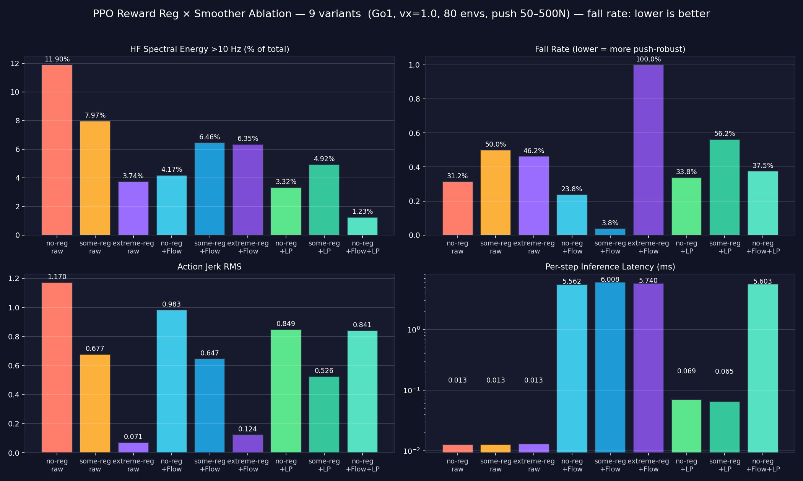

Abstract
Reinforcement learning policies trained to make a quadruped walk usually do so successfully — but the actions they output are jittery. The motors twitch back and forth at high frequency between control steps, producing fluctuating ground forces that destabilise balance, accelerate mechanical wear, and waste energy. We treat this as a practical question: given a working but jittery PPO policy, what is the best way to reduce its jitter without making it worse at the actual task? We compare three approaches that intervene at different stages: reward-side action regularisation during PPO training, online causal low-pass filtering at deployment, and a learned post-hoc action refinement using flow matching. We benchmark these methods individually and in combination through a 9-variant ablation crossing three reward regularisation levels with four post-hoc smoothing schemes, evaluated on a Unitree Go1 in NVIDIA Isaac Sim under push-recovery stress tests with 50–500 N lateral impulses applied across 80 parallel environments. The best configuration — moderate reward regularisation paired with a flow-matched refinement trained on physics-aware optimal targets — achieves a 46.25 percentage-point reduction in fall rate (50.00% → 3.75%) and −38% high-frequency spectral energy, while adding only ~6 ms of inference overhead per 20 ms control step. The ablation reveals a sharp interaction between the methods: removing reward regularisation weakens the flow's benefit, while pushing it too far breaks the policy so completely that the learned refinement collapses to total failure. Smoothness, stability, and task performance are not separate dials — they are coupled, and the right combination matters more than any single technique.
Background
Why are PPO policies jittery?
A trained PPO policy outputs an action based only on the current observation: $a_t = \mu_\theta(s_t)$. The policy is essentially a feedforward neural network — give it a state, it gives you back an action. The problem is that this mapping is very sensitive to small changes in the input. If the robot's joint sensors read slightly different values from one timestep to the next (which always happens — sensors are noisy, simulation has numerical noise, contacts cause small jolts), the policy's output can swing significantly.
You can see why with a simple Taylor expansion. Around the previous state $s_{t-1}$, the change in action is approximately
where $J_\mu$ is the Jacobian of the policy. If the network has high gains — and PPO networks usually do, because they're trained to be highly responsive — then small $\Delta s_t$ get amplified into large $\Delta a_t$. That amplification is jitter.
Why doesn't PPO train this away on its own? Because the PPO objective only rewards task performance — it just wants to maximise expected reward via the clipped surrogate
Nowhere does it penalise jagged action sequences. As long as the jagged actions track velocity well, PPO is happy. But on the Unitree Go1's high-gain PD controller ($K_p{=}25$), every action discontinuity becomes a torque spike every 20 ms, which destabilises foot contact, accelerates gearbox wear, and burns extra power. Smoothness has to be added by something else.
Why jitter matters specifically for legged robots
Balance in a quadruped depends on each foot pushing against the ground with steady, consistent force. When the policy commands the joints to twitch back and forth at high frequency, those forces fluctuate rapidly — feet either slip (too much sideways force in one direction) or briefly lose grip (too little vertical force) instead of maintaining stable contact. When a push hits the robot, it can't apply a sustained corrective force because it's already fighting itself, so it falls. This is why jitter reduction isn't just a cosmetic concern for legged robots: it directly translates into how well the robot recovers from disturbances. The push-recovery experiments later in this report measure exactly this.
The three jitter-reduction methods we compared
We considered three different ways to attack this problem, each operating at a different stage of the policy lifecycle:
(A) Reward-side action regularisation. Add a penalty $\lambda \lVert a_t - a_{t-1} \rVert^2$ directly into the PPO reward, so the policy learns to prefer smooth actions during training. Isaac Lab uses this by default with $\lambda{=}{-}0.01$. The downside: it requires retraining the policy from scratch whenever you want to change the smoothness target, and it penalises all action changes equally — including the rapid corrections the robot needs to recover from a push. Smoothness fights with task performance in the same loss function.
(B) Online low-pass filtering. Take the policy's actions at deployment time and pass them through a low-pass filter (we use a causal first-order Butterworth IIR with a 15 Hz cutoff). Cheap to implement and adds zero training overhead. The problem is the same as (A) but worse: a low-pass filter is completely task-blind. It can't tell the difference between meaningless jitter and a legitimate fast corrective action — it just attenuates everything above the cutoff. If the robot needs a sharp hip flick to catch itself from falling, the filter blunts it, and the robot falls anyway.
(C) Learned post-hoc refinement (flow matching). Train a separate model offline to map raw policy actions toward task-aware "better" actions, and apply it as a post-processing step at deployment. The frozen PPO policy stays untouched. This is more involved than the other two but, in principle, can produce corrections that are both smooth and aware of what the robot is actually doing — because the training targets come from rolling out candidate actions in simulation and scoring them on a physics-aware cost function.
The interesting question isn't which one of these is best in isolation — it's how they interact. Do they stack? Do they fight? Does the right combination beat any single method? The 9-variant ablation later in this report is designed to answer that.
A Brief Introduction to Flow Matching
Of the three methods we tested, flow matching is the least familiar to most people, so we walk through it carefully here. The intuition first, the math second.
The intuition: learning a "current" between two distributions
Suppose you have a cloud of points $x_0$ — the source — and you want to transport them to a different cloud $x_1$ — the target. A standard approach would be to train a network that takes $x_0$ as input and predicts $x_1$ in one shot. Flow matching does something different: instead of predicting where each point should end up, it learns a velocity field — a function that, at every point in space and every moment in time, tells you which direction to move. You then just follow these little arrows step by step until you arrive at the target.
Think of it like an ocean current. Every point in the water has a flow direction. Drop a leaf in at the source and it gets carried to the target naturally, without anyone explicitly telling it the destination — it just keeps following the local current. Flow matching trains a neural network to be that current.
For our problem, the source is the raw PPO action $a_{\text{ppo}}$ and the target is a "better" action $a^*$ (we'll explain how we get $a^*$ in the Method section). The flow matching network learns the current that pushes raw actions toward better ones.
The setup
Formally, we define a time variable $t \in [0, 1]$, where $t{=}0$ is the source and $t{=}1$ is the target. The position of a point at time $t$ is $x_t$, and the velocity field we want to learn is $u_t(x)$. If you start at $x_0$ and follow the field, your position evolves according to the ODE
If $u_t$ is the right field, then integrating it from $t{=}0$ to $t{=}1$ gives you a sample from the target distribution. Our job during training is to find this $u_t$.
The clever trick: straight-line paths
The most natural choice for a path from $x_0$ to $x_1$ is just a straight line:
Differentiating both sides with respect to $t$ gives the velocity along this path:
So along this straight-line path, the velocity is just the displacement from start to end — it's the same value at every point along the line. This is convenient because we know exactly what the network should output: for any pair of $(x_0, x_1)$ from our training data, the target velocity is the constant vector $x_1 - x_0$.
The training objective
So we set up a regression problem. The network $u_\theta$ takes as input the current position $x_t$, the current time $t$, and (in our case) the robot state $s$ for context. It tries to predict the target velocity. The loss is just mean squared error:
For each training example we sample a random pair $(x_0, x_1)$ from our dataset, sample a random time $t \in [0, 1]$, compute the interpolated point $x_t = (1-t)x_0 + t x_1$, and ask the network to predict $x_1 - x_0$. This is the form Lipman et al. [1] introduced and is sometimes called "conditional flow matching with optimal-transport paths." The Cambridge MLG blog [5] has a clear walk-through of why this loss yields a network that approximates the right velocity field.
How we use it at runtime
Once the network is trained, applying it at deployment is straightforward. Start at the raw PPO action $x_0 = a_{\text{ppo}}$, and step forward through time using simple Euler integration:
After $N$ steps we have our refined action $a_{\text{fm}} = x_N$. We use $N{=}20$ steps. The parameter $t_{\text{end}}$ is interesting: setting $t_{\text{end}}{=}1$ applies the full correction (raw all the way to target), while $t_{\text{end}}{=}0$ leaves the action unchanged. Anything in between is a partial correction. This gives us a continuous knob at deployment time to dial in how aggressively we want to smooth, without ever retraining the network.
Why we picked flow matching specifically
We could have used a simpler approach — train a network to map $a_{\text{ppo}}$ directly to $a^*$ in one shot using ordinary regression. Three things made flow matching a better fit:
It avoids "averaging" failures. When multiple different $a^*$ values are equally valid for the same input (which happens because our targets come from picking the best of 16 random candidates — sometimes two candidates are nearly tied but very different), a plain regressor under MSE collapses these to their average, which may not be a valid action at all. Flow matching learns the full distribution of corrections rather than a single point estimate, so it doesn't have this failure mode.
The training signal is denser. A plain regressor is only supervised on the endpoint $a^*$. Flow matching is supervised at every time $t \in [0,1]$ along the path, which gives the network many more constraints from each training pair. This is especially helpful given that our targets are themselves a bit noisy.
The deployment-time knob. The $t_{\text{end}}$ parameter falls out of the formulation for free, and it lets us tune the smoothness/responsiveness trade-off at inference without retraining. A plain regressor doesn't give us this.
Method
Environment and base policies
We use the Unitree Go1 quadruped — a real commercial robot with 12 controllable joints (3 per leg: hip abduction, hip flexion, knee). The action space is 12-dimensional joint position offsets, and the observation is 48-dimensional, containing base linear and angular velocity, projected gravity, the velocity command, all joint positions and velocities, and the previous action. Simulation runs in NVIDIA Isaac Lab [3] at 200 Hz with control issued every 4 physics steps, giving an effective 50 Hz control rate. The task is a constant 1.0 m/s forward velocity tracking on flat terrain — deliberately simple, so any improvement we measure is attributable to the smoothing intervention rather than terrain or task complexity.
We train PPO for 300 iterations with 4096 parallel environments, MLP[128,128,128] ELU actor and critic, GAE($\lambda{=}0.95$), discount $\gamma{=}0.99$, and an adaptive KL learning-rate schedule. Crucially, we train three different PPO policies that differ only in the strength of reward-side action regularisation: $\lambda_{\text{a-rate}} \in \{0,\, {-}0.01,\, {-}0.5\}$, which we call no-reg, some-reg (the IsaacLab default), and extreme-reg. Everything else — seed, environments, hyperparameters — is identical.
Generating "better" targets via short-horizon shooting
To train the flow model, we need pairs of (raw PPO action, better action). The "better" action $a^*$ is the key design choice. Our approach is short-horizon random shooting — a form of model-predictive evaluation that doesn't require a learned dynamics model because we have access to the simulator directly.
For each timestep in a 5000-step PPO rollout, we restore the full simulator state into $K{=}16$ parallel environments. In each environment we try a different candidate action: candidate 0 is exactly the PPO action (this guarantees $a^*$ can never score worse than what PPO would have done), and candidates 1 through 15 are the PPO action plus Gaussian noise with $\sigma{=}0.1$. We let each candidate play out for $H{=}10$ steps with the PPO policy taking over after the first action, then score each rollout with a multi-objective cost:
Tracking is $\lVert v_x - v_{\text{cmd}} \rVert^2$ — how well the robot follows the commanded velocity. The jerk term penalises rapid changes in action. Energy is the sum of $|\tau_i \dot q_i|$ over all joints — mechanical power. Instability is $\lVert g_z + 1 \rVert^2$ on the projected gravity z-component, which captures roll and pitch (a perfectly upright robot has $g_z = -1$). A 100.0 fall penalty is added if the robot terminates during the horizon. We use $\lambda_1{=}3,\, \lambda_2{=}0.5,\, \lambda_3{=}0.3,\, \lambda_4{=}2$ — these "balanced" weights were settled on after early experiments with $\lambda_4{=}5$ produced overly cautious targets that barely moved the robot.
One important post-processing step: random shooting picks each timestep's candidate independently, so the resulting $a^*$ trajectory is itself non-smooth even though each individual action is physics-aware. We run a Butterworth low-pass filter (2nd order, 15 Hz cutoff, zero-phase filtfilt) over the per-episode $a^*$ trajectories to add temporal coherence before training. We call the resulting target distribution Bal-LP (balanced + low-passed).
The velocity network
VelocityNet is a small MLP with three hidden layers of 256 units and SiLU activations. The input is the concatenation of the current position $x_t$ (12D), the time $t$ (1D), and the robot state $s$ (48D), totalling 61 dimensions. The output is a 12-dimensional velocity prediction. Total parameter count is about 150,000 — small enough that training takes ~30 seconds on a laptop GPU. We use SiLU rather than ReLU because we're going to integrate this network's output as a vector field, and ReLU's hard kinks would produce erratic Euler trajectories. Smoothness in the activation matches the smoothness we want in the learned current.
Training uses AdamW (lr $=10^{-3}$, weight decay $=10^{-5}$, cosine annealing) for 200 epochs at batch size 512, using the flow matching loss described in §02. We train three separate flow models, one per PPO policy, on $a^*$ generated from that policy's own rollouts.
Inference
At each control step we Euler-integrate from $x_0 = a_{\text{ppo}}$ for $N{=}20$ steps with $\Delta t = t_{\text{end}}/N$. The smoothed action is the final position $a_{\text{fm}} = x_N$. End-to-end latency is ~6 ms per control step — well within the 20 ms budget at 50 Hz.
The 9-variant ablation
To isolate the contribution of each design choice, we cross the three reward levels with four post-hoc smoothing schemes:
- raw — no post-hoc smoothing
- + Flow — per-policy flow matching
- + LP — causal IIR low-pass filter at 15 Hz
- + Flow + LP — flow followed by causal LP (cascade)
That gives 9 variants total (3 × 4, minus the single-policy LP we already have). All are evaluated under identical 80-environment push-recovery tests with lateral impulses linearly spaced from 50–500 N, identical seeds, and identical initial conditions.
Results

Headline ranking
| Variant | $\lambda_{\text{a-rate}}$ | HF >10 Hz | $a$-rate RMS | Fall rate | Inf. (ms) |
|---|---|---|---|---|---|
| Some-reg + Flow | −0.01 | 6.46% | 0.723 | 3.75% | 6.0 |
| No-reg + Flow | 0 | 4.17% | 0.970 | 23.75% | 5.6 |
| No-reg PPO (raw) | 0 | 11.90% | 1.010 | 31.25% | 0.013 |
| No-reg + LP | 0 | 3.32% | 0.888 | 33.75% | 0.069 |
| No-reg + Flow + LP | 0 | 1.23% | 0.915 | 37.50% | 5.6 |
| Extreme-reg PPO (raw) | −0.5 | 3.74% | 0.049 | 46.25% | 0.013 |
| Some-reg PPO (raw) | −0.01 | 7.97% | 0.717 | 50.00% | 0.013 |
| Some-reg + LP | −0.01 | 4.92% | 0.671 | 56.25% | 0.065 |
| Extreme-reg + Flow | −0.5 | 6.35% | 0.077 | 100.00% | 5.7 |
The reward-regularisation × flow-matching interaction
The cleanest way to see the interaction is to pair each PPO checkpoint with its own per-policy flow:
| Reg level | Raw fall rate | + Flow | $\Delta$ |
|---|---|---|---|
| $\lambda{=}0$ (no-reg) | 31.25% | 23.75% | −7.50 pp |
| $\lambda{=}{-}0.01$ (some-reg) | 50.00% | 3.75% | −46.25 pp |
| $\lambda{=}{-}0.5$ (extreme-reg) | 46.25% | 100.00% | +53.75 pp |
The action-rate penalty has a sharp sweet spot at $\lambda{=}{-}0.01$: removing it weakens flow's benefit, pushing it extreme breaks the policy so badly that flow makes things worse.
Mechanism: why these numbers come out this way
Why some-reg pairs so well with flow. The $\lambda{=}{-}0.01$ penalty trains a policy that is already biased toward smooth-ish actions, but only weakly — the raw policy still falls 50% of the time. Crucially, this weak prior on smoothness produces rollout data where the random-shooting candidates around $a_{\text{ppo}}$ live in a region of action space that is reasonably well-behaved. When we generate optimal targets from these rollouts, the resulting $a^*$ distribution is both physics-aware and reachable from $a_{\text{ppo}}$ via short OT paths. The flow learns a high-quality velocity field, and at inference it confidently moves actions toward stable, smooth corrections.
Why no-reg gains less from flow. Without any reward-side smoothness signal, the no-reg policy is more aggressive and explores a wider, jerkier region of action space. Its raw fall rate is paradoxically lower (31.25%) because the policy has not been pushed away from rapid corrective actions — it falls less from natural pushes. But its rollout data is messier, the optimal targets that minimise our cost are further from $a_{\text{ppo}}$, and the OT paths the flow must learn are longer and less consistent. The flow still helps (−7.5 pp) but cannot match the some-reg gain.
Why extreme-reg + flow collapses. At $\lambda{=}{-}0.5$ the penalty dominates the reward; the policy converges to a near-static stance ($\bar v_x = -0.001$ m/s, action-rate RMS 0.049) — the robot literally does not walk. Optimal target generation runs on rollouts of an essentially stationary robot, producing an $a^*$ distribution in a tiny region of action space with no useful coverage of locomotion behaviour. The flow learns to push actions toward this near-stationary attractor, and during push tests the robot has no walking gait to recover with. Every push results in a fall.
Why Flow+LP underperforms Flow alone. The cascade no-reg + Flow + LP achieves the lowest HF spectral energy of any variant (1.23%) but a worse fall rate (37.5%) than no-reg + Flow alone (23.75%). The causal IIR filter at the end of the pipeline introduces phase lag exactly when responsiveness matters most — during a push. Smoothing past the point where corrections can land in time is actively harmful. This is the central failure mode of pure filtering: it cannot tell apart jitter from corrective signal, and aggressive smoothing kills both.
HF spectral energy vs action jerk: why they tell different stories
HF spectral energy and action jerk both claim to measure "smoothness," but they capture different things. Spectral energy looks at how much sustained oscillation the action signal contains above 10 Hz — it answers "is the motor wobbling at high frequency?" Action jerk is the size of the discrete second derivative at every timestep — it answers "how sharply does the action change from one step to the next?" A signal can have low HF energy (no periodic ringing) while still having high jerk if it makes large, fast, but non-repeating jumps between flat plateaus. That is exactly what happens with our flow-smoothed actions: the flow removes oscillation, but the underlying optimal targets it points to are still chosen independently at each timestep, so the resulting trajectory has clean spectra but is still piecewise-jumpy. Pulling jerk down to extreme-reg's 0.07 RMS would require either a much larger jerk weight in the optimal target cost or a temporal smoother applied to the flow output.
What Worked, What Didn't, and the Process of Iteration
The path through five iterations
The first attempted target distribution was a per-joint adaptive low-pass filter applied directly to PPO actions (8–25 Hz cutoffs depending on which joints were noisiest). The flow trained on these targets achieved −19% HF energy and modest fall reduction (50% → 34%) but was unsatisfying: it just delegated low-pass filtering to a 150k-parameter network. Optimal target generation with stability-heavy cost weights ($\lambda_4{=}5$) produced targets that were physics-aware but yielded a robot that barely moved (4.55 m AB-race vs 5.62 m raw). A naive cascade — pipe the optimal flow through the LP flow at inference — gave 22% falls and 4.90 m, simply averaging the two failure modes. Rebalancing the cost weights to $\lambda_1{=}3,\, \lambda_4{=}2$ recovered speed but produced no smoothing benefit on its own. The key insight, arrived at last, was to combine the recipes at the target distribution level: generate targets with balanced weights, LP-filter them before training. The flow then learned a velocity field pointing toward "physics-aware and smooth" — a single objective baked into the data, not separated into two stages.
What didn't work
Inference cascading flow models trained independently on different target distributions does not work — the LP flow was trained expecting raw PPO actions as input but received already-corrected actions from the optimal flow, producing an unprincipled blend of both. Pure low-pass filtering at deployment is a poor general-purpose smoother: it is task-blind, introduces phase lag, and as the some-reg + LP variant shows, can actually increase fall rate by suppressing legitimate corrective actions. Pushing reward regularisation aggressively does not produce a better-behaved policy; it produces a non-functional one.
What we would change
A learned, state-dependent $t_{\text{end}}$ — applying full smoothing during steady-state walking and dialing back during disturbance recovery — would directly address the Flow+LP failure mode. An attention-based velocity network operating over joint tokens (rather than a flat MLP) could enforce inter-joint coordination explicitly, exploiting the kinematic tree. Sim-to-real evaluation on a physical Go1 is the most important missing piece — our smoothness gains are most valuable for hardware deployment, where actuator bandwidth and contact-model mismatch are the primary failure modes that smoother actions structurally mitigate.
Honest limitations
The headline 92% reduction in fall rate is real but comes paired with a 32% reduction in forward speed (5.62 m → 3.85 m AB-race), so the framing matters: this is jitter reduction trading speed for stability, not a free lunch. The $t_{\text{end}}$ knob lets operators sit anywhere on this Pareto front, but the front itself is non-trivial. The 5000-timestep training corpus is small; we have not characterised how the method scales with more data or harder tasks (rough terrain, payload variation). The optimal target generator uses random shooting with $K{=}16$ — a coarse search that almost certainly misses better candidates; gradient-based target optimisation or a larger candidate count would likely improve target quality. Finally, the flow is trained per-policy: we do not have a single flow that works across all three PPO checkpoints, and we have not tested whether one trained on some-reg rollouts transfers to no-reg deployment.